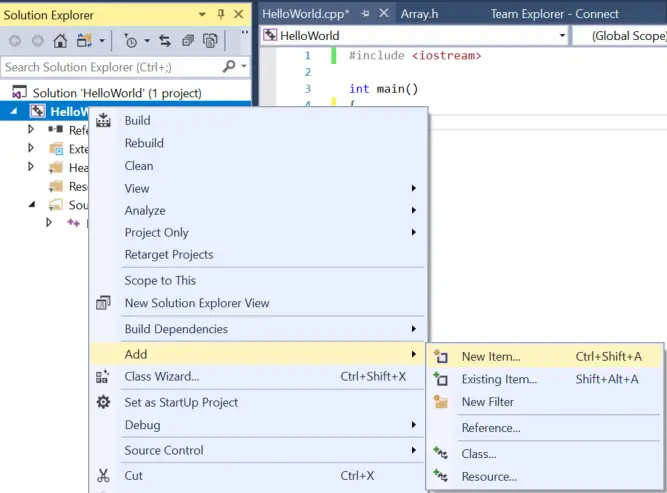
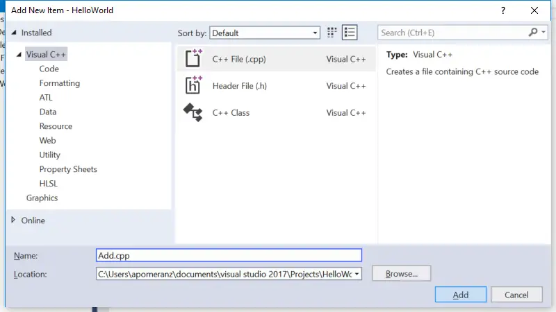
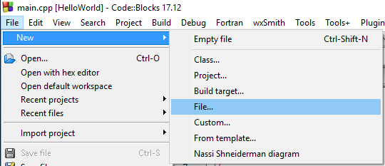
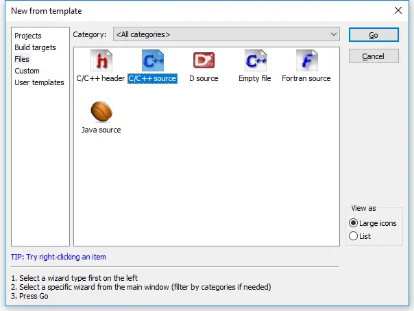
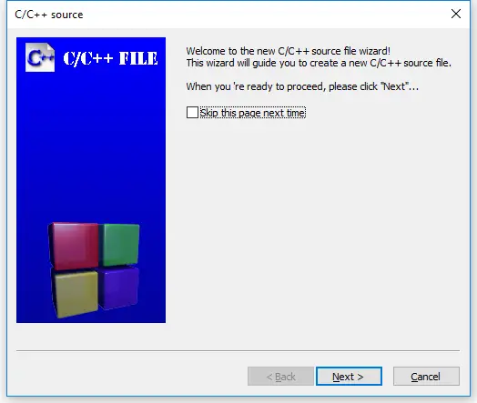
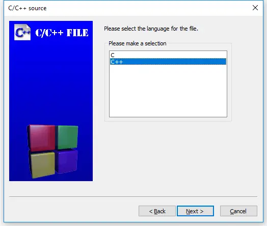
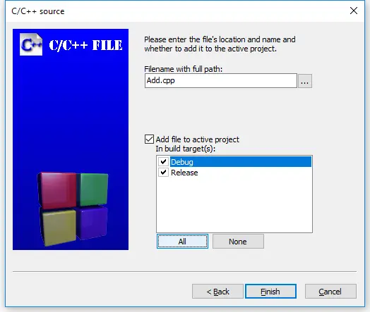

Adding files to your project
As programs get larger, it is common to split them into multiple files for organizational or reusability purposes. One advantage of working with an IDE is that they make working with multiple files much easier. You already know how to create and compile single-file projects. Adding new files to existing projects is very easy.
Best practice
When you add new code files to your project, give them a .cpp extension.
For Visual Studio users
In Visual Studio, right click on the Source Files folder (or the project name) in the Solution Explorer window, and choose Add > New Item….

Make sure you have C++ File (.cpp) selected. Give the new file a name, and it will be added to your project.
Note: Your Visual Studio may opt to show you a compact view instead of the full view shown above. You can either use the compact view, or click “Show all Templates” to get to the full view.

Note: If you create a new file from the File menu instead of from your project in the Solution Explorer, the new file won’t be added to your project automatically. You’ll have to add it to the project manually. To do so, right click on Source Files in the Solution Explorer, choose Add > Existing Item, and then select your file.
Now when you compile your program, you should see the compiler list the name of your file as it compiles it.
For Code::Blocks users
In Code::Blocks, go to the File menu and choose New > File….

In the New from template dialog, select C/C++ source and click Go.

You may or may not see a welcome to the C/C++ source file wizard dialog at this point. If you do, click Next.

On the next page of the wizard, select “C++” and click Next.

Now give the new file a name (don’t forget the .cpp extension), and click the All button to ensure all build targets are selected. Finally, select finish.

Now when you compile your program, you should see the compiler list the name of your file as it compiles it.
For gcc users
From the command line, you can create the additional file yourself, using your favorite editor, and give it a name. When you compile your program, you’ll need to include all of the relevant code files on the compile line. For example: g++ main.cpp add.cpp -o main, where main.cpp and add.cpp are the names of your code files, and main is the name of the output file.
For VS Code users
To create a new file, choose View > Explorer from the top nav to open the Explorer pane, and then click the New File icon to the right of the project name. Alternately, choose File > New File from the top nav. Then give your new file a name (don’t forget the .cpp extension). If the file appears inside the .vscode folder, drag it up one level to the project folder.
Next open the tasks.json file, and find the line "${file}",.
You have two options here:
- If you wish to be explicit about what files get compiled, replace
"${file}",with the name of each file you wish to compile, one per line, like this:
"main.cpp",
"add.cpp",
- Reader “geo” reports that you can have VS Code automatically compile all .cpp files in the directory by replacing
"${file}",with"${fileDirname}\\**.cpp"(on Windows). - Reader “Orb” reports that
"${fileDirname}/**.cpp"works on Unix.
A multi-file example
In lesson 2.7 -- Forward declarations and definitions, we took a look at a single-file program that wouldn’t compile:
#include <iostream>
int main()
{
std::cout << "The sum of 3 and 4 is: " << add(3, 4) << '\n';
return 0;
}
int add(int x, int y)
{
return x + y;
}When the compiler reaches the function call to add on line 5 of main, it doesn’t know what add is, because we haven’t defined add until line 9! Our solution to this was to either reorder the functions (placing add first) or use a forward declaration for add.
Now let’s take a look at a similar multi-file program:
add.cpp:
int add(int x, int y)
{
return x + y;
}main.cpp:
#include <iostream>
int main()
{
std::cout << "The sum of 3 and 4 is: " << add(3, 4) << '\n'; // compile error
return 0;
}Your compiler may compile either add.cpp or main.cpp first. Either way, main.cpp will fail to compile, giving the same compiler error as the previous example:
main.cpp(5) : error C3861: 'add': identifier not found
The reason is exactly the same as well: when the compiler reaches line 5 of main.cpp, it doesn’t know what identifier add is.
Remember, the compiler compiles each file individually. It does not know about the contents of other code files, or remember anything it has seen from previously compiled code files. So even though the compiler may have seen the definition of function add previously (if it compiled add.cpp first), it doesn’t remember.
This limited visibility and short memory is intentional, for a few reasons:
- It allows the source files of a project to be compiled in any order.
- When we change a source file, only that source file needs to be recompiled.
- It reduces the possibility of naming conflicts between identifiers in different files.
We’ll explore what happens when names do conflict in the next lesson (2.9 -- Naming collisions and an introduction to namespaces).
Our options for a solution here are the same as before: place the definition of function add before function main, or satisfy the compiler with a forward declaration. In this case, because function add is in another file, the reordering option isn’t possible.
The solution here is to use a forward declaration:
main.cpp (with forward declaration):
#include <iostream>
int add(int x, int y); // needed so main.cpp knows that add() is a function defined elsewhere
int main()
{
std::cout << "The sum of 3 and 4 is: " << add(3, 4) << '\n';
return 0;
}add.cpp (stays the same):
int add(int x, int y)
{
return x + y;
}Now, when the compiler is compiling main.cpp, it will know what identifier add is and be satisfied. The linker will connect the function call to add in main.cpp to the definition of function add in add.cpp.
Using this method, we can give files access to functions that live in another file.
Try compiling add.cpp and the main.cpp with the forward declaration for yourself. If you get a linker error, make sure you’ve added add.cpp to your project or compilation line properly.
Tip
Because the compiler compiles each code file individually (and then forgets what it has seen), each code file that uses std::cout or std::cin needs to #include <iostream>.
In the above example, if add.cpp had used std::cout or std::cin, it would have needed to #include <iostream>.
Key insight
When an identifier is used in an expression, the identifier must be connected to its definition.
- If the compiler has seen neither a forward declaration nor a definition for the identifier in the file being compiled, it will error at the point where the identifier is used.
- Otherwise, if a definition exists in the same file, the compiler will connect the use of the identifier to its definition.
- Otherwise, if a definition exists in a different file (and is visible to the linker), the linker will connect the use of the identifier to its definition.
- Otherwise, the linker will issue an error indicating that it couldn’t find a definition for the identifier.
Something went wrong!
There are plenty of things that can go wrong the first time you try to work with multiple files. If you tried the above example and ran into an error, check the following:
- If you get a compiler error about add not being defined in main, you probably forgot the forward declaration for function add in main.cpp.
- If you get a linker error about add not being defined, e.g.
unresolved external symbol "int __cdecl add(int,int)" (?add@@YAHHH@Z) referenced in function _main
2a. …the most likely reason is that add.cpp is not added to your project correctly. When you compile, you should see the compiler list both main.cpp and add.cpp. If you only see main.cpp, then add.cpp definitely isn’t getting compiled. If you’re using Visual Studio or Code::Blocks, you should see add.cpp listed in the Solution Explorer/project pane on the left or right side of the IDE. If you don’t, right click on your project, and add the file, then try compiling again. If you’re compiling on the command line, don’t forget to include both main.cpp and add.cpp in your compile command.
2b. …it’s possible that you added add.cpp to the wrong project.
2c. …it’s possible that the file is set to not compile or link. Check the file properties and ensure the file is configured to be compiled/linked. In Code::Blocks, compile and link are separate checkboxes that should be checked. In Visual Studio, there’s an “exclude from build” option that should be set to “no” or left blank. Make sure you check each build configuration (e.g. debug and release) separately.
- Do not #include “add.cpp” from main.cpp. While doing so compiles in this case, #including .cpp files increases the risk of naming conflicts and other unanticipated consequences (especially as programs get larger and more complex). We discuss #include further in lesson 2.10 -- Introduction to the preprocessor.
Summary
C++ is designed so that each source file can be compiled independently, with no knowledge of what is in other files. Therefore, the order in which files are actually compiled should not be relevant.
We will begin working with multiple files a lot once we get into object-oriented programming, so now’s as good a time as any to make sure you understand how to add and compile multiple file projects.
Reminder: Whenever you create a new code (.cpp) file, you will need to add it to your project so that it gets compiled.
Quiz time
Question #1
Split the following program into two files (main.cpp, and input.cpp). main.cpp should have the main function, and input.cpp should have the getInteger function.
#include <iostream>
int getInteger()
{
std::cout << "Enter an integer: ";
int x{};
std::cin >> x;
return x;
}
int main()
{
int x{ getInteger() };
int y{ getInteger() };
std::cout << x << " + " << y << " is " << x + y << '\n';
return 0;
}input.cpp:
#include <iostream> // we need iostream since we use it in this file
int getInteger()
{
std::cout << "Enter an integer: ";
int x{};
std::cin >> x;
return x;
}main.cpp:
#include <iostream> // we need iostream here too since we use it in this file as well
int getInteger(); // forward declaration for function getInteger
int main()
{
int x{ getInteger() };
int y{ getInteger() };
std::cout << x << " + " << y << " is " << x + y << '\n';
return 0;
}If you get an error from the linker regarding an undefined reference to getInteger(), then you probably forgot to compile input.cpp.